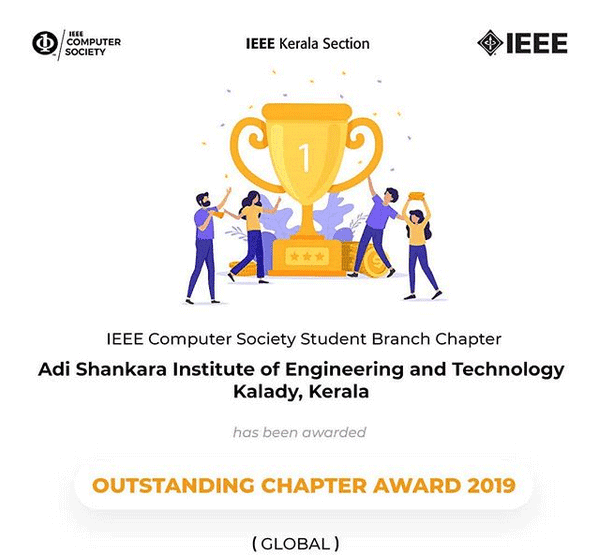
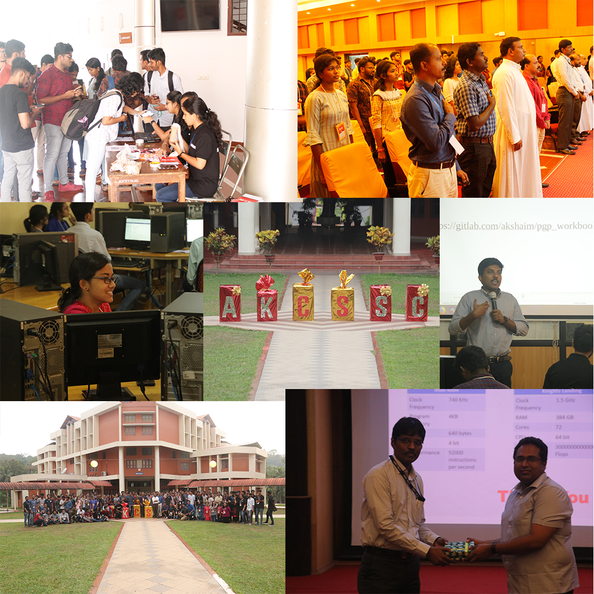
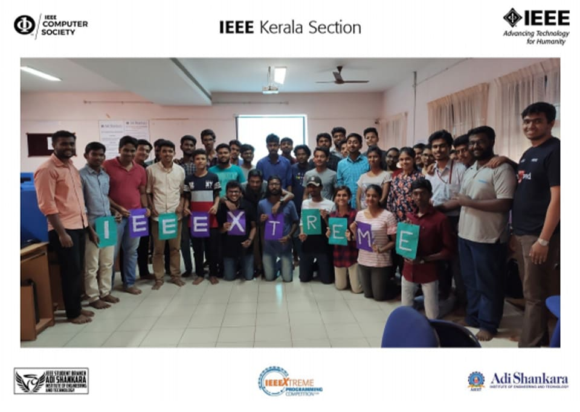
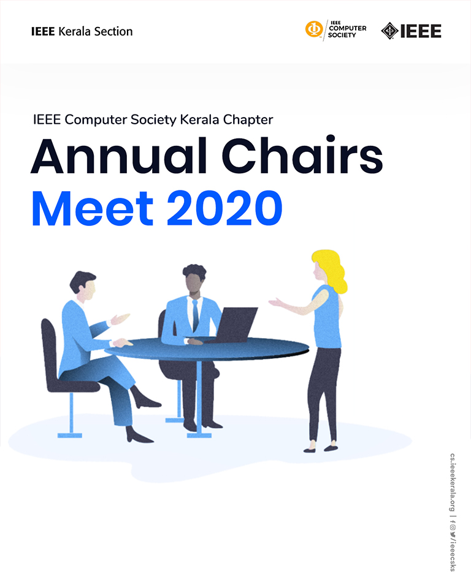

QUARTER IV : 2019 |
TECHNICAL ARTICLESteps for Successful Android Application
Wondered on how various android application works, curios to know how you can make? You can make your own Application in just 5 steps.
NatureThe Life is mired in routine and expectations. Getting into a new space places your team in a mind-set to be more receptive to finding and sharing ideas. Being close to nature is energizing. It helps your team to be more productive in a very concentrated period of time. By breaking free of the routines of the office you get to better ideas, faster. According to a study in the Journal of Experimental Psychology walking increases creative output by 60%. Divide and RuleModular is the process of subdividing a problem into separate sub-problem. When you have an idea, first make an outline on what your product will be. Understand the problems and methods in which you will try to get your idea. Divide each problem in sub groups and repeat this process till all the problems at the base level which can’t be simplified more. AnalyseThe most important part of your Android Application to be success is that you analyse the application correctly. In android every screen you see is called activity (except few). Anything you see in android like style, design etc. are called front end and those which you can’t see like operations or function or calculation done when you perform an action is called back-end. In short front-end is the design part and back-end is the coding part. The back end is up to you, while the front-end is the one which impress the users. Spread the WordYour Android Application will be the best among other, but it’s not useful if no one is using it. As you have made the android application, everyone may not use it. A student may not use a business app, and a business man need not use student app, every application is based on a group of people. Analyse your app, find bugs and error and once your application is ready, share it to those who needs to solve the problem that you have solved first. Expert AdviceYour idea is unique but it may not be done using unique methods, others may have tried and they might have more experience than you. Always Talk to Others and Explore more. |
Updates From IEEE Computer Society Kerala ChapterThe Global Outstanding Chapter Award 2019

The IEEE Computer Society Kerala Chapter stands proud, with Adi Shankara Institute of Engineering and Technology, Kalady winning "The Global Outstanding Chapter Award 2019". This being the second year in a row, a chapter from the IEEE Kerala Section securing the award.Hearty congratulations to the ASIET IEEE CS Student Branch Chapter and all those who worked behind the scenes! |
||||
AKCSSC 2019

The All Kerala Computer Society Student Convention (AKCSSC) is the annual student convention conducted by IEEE Computer Society Kerala Section. This year, the host for the event was St. Joseph’s College of Engineering and Technology, Palai. The theme for this year’s edition of the event was “Evolution of Technology”. The event aimed to instill in the minds of the vibrant student audience, the history of the current technology we use. Improvisation of existing technology by the process of unlearning in the learn-unlearn-relearn cycle, to re-imagine the traditional methods of leveraging technology, was the element of focus in this year’s AKCSSC. Slightly deviating from the traditional technical talks, this edition of AKCSSC saw two non-technical talks on topics that support and enrich the technical aspects of technology, such as content creation and women in computing. |
||||
IEEEXtreme 13.0

IEEEXTREME 13.0 was hosted by the IEEE Computer Society Kerala and IEEE SB ASIET at Adi
Shankara Institute of Engineering and Technology, Kalady on 19th October, 2019 from 5:30 AM.
|
||||
Student Branch Events
|
||||
UPCOMING EVENTSAnnual Chairs Meet 2020

The Annual Chairs Meet is a meeting conducted every annum, for briefing the newly elected Computer Society Chapter Chairs of Student Branches across Kerala about their responsibilities, announcing the newly elected section volunteers for 2020, present reports and to felicitate those volunteers who have displayed exemplary skills in volunteering. |
||||
|